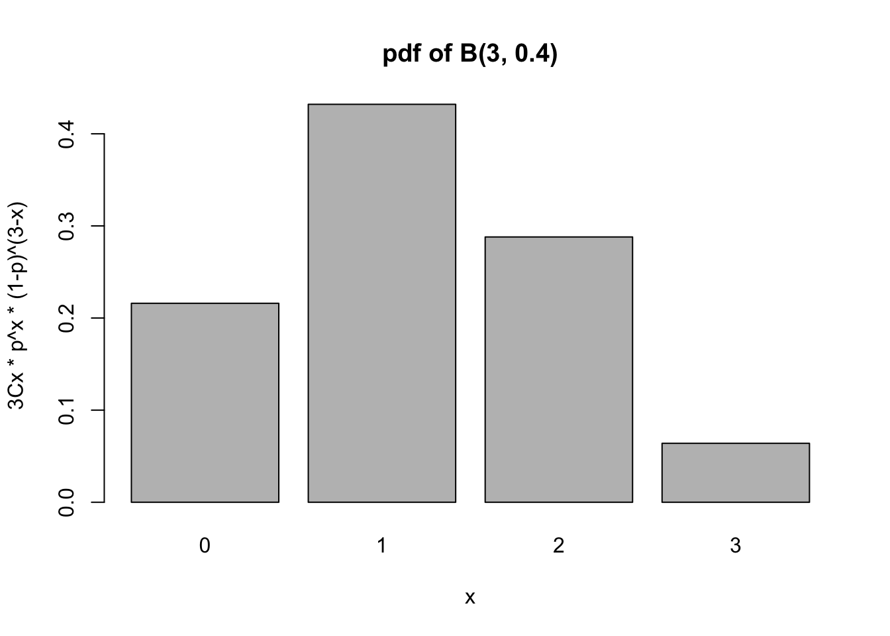
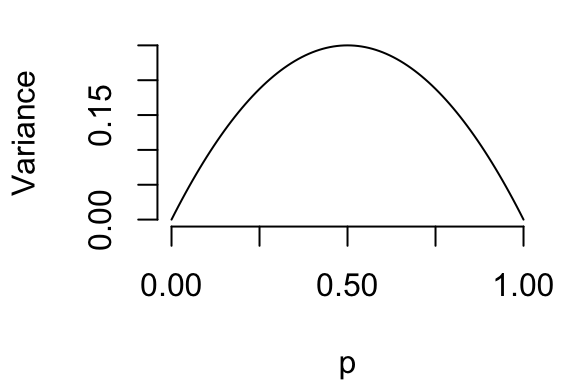

choose(n = 3, k = 0) # 3C0[1] 1choose(n = 3, k = 1) # 3C1[1] 3choose(n = 3, k = 2) # 3C2[1] 3choose(n = 3, k = 3) # 3C3[1] 1choose(n = 4, k = 2) # 4C2[1] 6Please pay attention to the margin notes.1 They often contain important information.2
Probability models are ways of laying out all possible events as well as the probability of each event. For things like coins and dice, everything has the same probability and things work out nicely. In Two-Way tables, we have all the probabilities laid out in front of us. The Binomomial distribution is our first foray into a formulaic approach to probabilities.
If we flip two coins, the outcomes are {HH, HT, TH, TT} and each of these are equally likely. Instead of looking at each event, what is the probability that there are 0 heads? 1 head? 2 heads?
For 0 and 2 heads, there is only 1 possibility, so it must be 1/4 for each. For 1 head, there are 2 possibilities, each with probability 1/4, so the answer is 2*1/4.3
Let’s flip three coins. The outcomes are {HHH, HHT, HTH, THH, HTT, THT, TTH, TTT}, so each outcome has a probability of 1/8. Another way to come to this number is to look at the probability of heads: For HHH, the probability is 0.5*0.5*0.5 since there’s a 50% chance of heads and each coin flip is independent.4
| # Heads | Outcomes | Probability |
|---|---|---|
| 0 | TTT | 1/8 |
| 1 | TTH, THT, HTT | 1/8+1/8+1/8 = 3/8 |
| 2 | HHT, HTH, THH | 3/8 |
| 3 | HHH | 1/8 |
Alright, let’s do 4 coins. How many ways are there to get, say, 2 heads out of four flips? You can bet that a smart mathemetician has figured out a way to do this without writing them all out again! This is called combinatorics, and includes a lot of things that are not relevant right now. We’ll focus on the choose function. For three coins, “3 choose 1” means “out of 3 options, choose 1 of them”. Sometimes this is shortened to “3C1”. As we saw in the table above, there’s 1 way to choose nothing (no heads), 3 ways to choose 1 thing, 3 ways to choose 2 things, and 1 way to choose 3 things.5 In R:
choose(n = 3, k = 0) # 3C0[1] 1choose(n = 3, k = 1) # 3C1[1] 3choose(n = 3, k = 2) # 3C2[1] 3choose(n = 3, k = 3) # 3C3[1] 1choose(n = 4, k = 2) # 4C2[1] 6So for 4 coins, there is 4C2 = 6 ways to get two heads.6 What’s the probability of each of these 6 outcomes? Since there’s a 0.5 chance of heads and a 0.5 chance of tails, there’s a 0.5*0.5*0.5*0.5 = 0.5\(^4\) = 0.0625 chance. That means that there’s a 6*0.0625 = 0.375 chance of getting two heads out of four flips.7
Just to be complete, let’s do this again for 5 coins. We’re already at the point where we need the choose function because there are too many outcomes to write out by hand. Let’s calculate some probabilities with R:
## Probability of 4 heads out of 5 flips:
choose(5, 4) * 0.5^5[1] 0.15625## Probability of 3 heads out of 5 flips:
choose(5, 3) * 0.5^5[1] 0.3125For completeness, let’s make sure these all add up to 1:
## I really hope this adds to 1
(choose(5, 0) * 0.5^5) +
(choose(5, 1) * 0.5^5) +
(choose(5, 2) * 0.5^5) +
(choose(5, 3) * 0.5^5) +
(choose(5, 4) * 0.5^5) +
(choose(5, 5) * 0.5^5)[1] 1If I roll two dice, what’s the probability that exactly 1 of them is a 3? One way this can happen is if the first dice is a 3 and the second one is not a 3. This probability is P(first dice is 3)*P(second dice is not 3). We know that P(first dice is 3) is easily seen to be 1/6. On the other hand, P(second dice is not 3) can be calculated as 1 - P(second dice is 3)8 = 1 - 1/6 = 5/6. So the probability is (1/6)*(1 - 1/6).
We can also have exactly one 3 if the first dice is not 3 but the second dice is 3. This has the same probability as the other way around: (1 - 1/6)*(1/6).
Notice how this is the second of two options. Again, we get to use the choose function:
## Probability of exactly one 3 in two dice rolls
choose(2, 1) * (1/6)*(1-1/6)[1] 0.2777778If we roll 18 dice, what’s the probability that exactly four of them are 5? Regardless of the order, we have four dice that are 5 and 14 dice that are not 5. The probability of any one of the outcomes is (1/6)\(^4\)*(1 - 1/6)\(^{14}\) = 0.000060098. That’s pretty unlikely for this exact dice combination of dice rolls! But how many ways are there for this to happen? There are 18C4 = 3060, which is a lot, so there are a lot of opportunities for things with small probabilities. The probability of exactly four 5s out of 18 rolls is 18C5*(1/6)4*(1-1/6)14 = 0.1840. Even though an individual dice roll is unlikely, there are a lot of dice rolls that meet our criteria of four 5s out of 18 rolls!
In general, if we have \(n\) trials and the probability of the event of interest, a.k.a. success, is \(p\), then
\[\begin{align*} P(x\text{ successes in }n\text{ trials}) = nCx*p^x*(1-p)^{n-x} \end{align*}\]
For the dice example, “x successes in n trials” can be interpreted as “four 6s in 18 trials”, where \(x=4\), \(n=18\), and the “14 rolls that are not four” comes from \(n-x=14\).
In the statement above, we used \(x\) to refer to the number of heads. I like this. Let’s keep doing this.
For Binomial probabilities, we use the notation:
\[\begin{align*} X \sim B(n,p) \end{align*}\]
which is read as “the random variable X is distributed as Binomial with n trials and probability of success p”.9 The “\(\sim\)” just means “is distributed as”, which tells us where the probabilities are distributed. This is why \(nCx*p^x*(1-p)^{n-x}\) is called the probability distribution function, or pdf.10
A random variable is just a variable that has a probability distribution,11 such as the number of heads out of 5 flips. Before flipping these coins we have no idea how many heads there will be, but we know the probability of each number. We always use upper case letters for random variables. Once we actually have a value (say, 1 heads), we use lower case. We often use the notation \(P(X = x)\) to refer to “the probability that the random variable \(X\) will have the specific value of \(x\)”. In other words, \(X\) is the unknown that could be anything, \(x\) is the specific probability that we’re interested in.
I just want to talk about “distributions” a little bit more. A distribution tells you where the probabilities are. For coins, 50% of the probability is in Heads, 50% is in in tails. When we talk about “is the dice a 3?”, one-sixth of the probability is distributed to the 3 and five-sixths are distributed elsewhere.
To summarise, saying that \(X \sim B(n,p)\), or that \(X\) is distributed as a Binomial random variable with \(n\) trials and probability of success \(p\), is the exact same as saying that \(P(x\text{ successes in }n\text{ trials})\) can be found using the equation \(nCx*p^x*(1-p)^{n-x}\). This is what it means to have a probability distribution function.
To see all of these probabilities at once, we can plot this as a graph. To reduce coding, let’s look at \(X\sim B(3, 0.4)\):
x <- c(0, 1, 2, 3) # X values
y <- c(
choose(3, 0) * (0.4)^0 * (1 - 0.4)^3,
choose(3, 1) * (0.4)^1 * (1 - 0.4)^2,
choose(3, 2) * (0.4)^2 * (1 - 0.4)^1,
choose(3, 3) * (0.4)^3 * (1 - 0.4)^0
)
#plot(x,y) # This will plot them, but it looks kinda bad
## Since X can only be 0, 1, 2, or 3, let's us a bar plot!
barplot(y, names = x,
main = "pdf of B(3, 0.4)", xlab = "x",
ylab = "3Cx * p^x * (1-p)^(3-x)")
Notice how 1 is the most likely value, with 2 being much less likely. This makes sense - if the probability of heads is less than 0.5, we expect that more of the coin flips will be tails! If the probability of “heads” were 0.5, then we would expect 1 and 2 to be equally likely.
choose(10, 8) * (0.8)^8 * (1-0.8)^2[1] 0.3019899choose(10, 9) * (0.8)^9 * (1-0.8)^1 +
choose(10, 10) * (0.8)^10 * (1-0.8)^9[1] 0.2684355Typing out the whole formula is getting boring. Surely R, a statistical programming language, has a way to do it for me, right? Of course!
choose(10, 8) * (0.8)^8 * (1 - 0.8)^2[1] 0.3019899dbinom(x = 8, size = 10, prob = 0.8)[1] 0.3019899The dbinom() function has exactly the arguments that you would expect. Lower case x is the specific value, size is the number of coin flips, prob is the probability of success. The d stands for “density”, which for our purposes is the same as “distribution”.
As a special note, R will take a vector for x. We can find multiple probabilities at once:
dbinom(x = c(8, 9, 10), size = 10, prob = 0.8)[1] 0.3019899 0.2684355 0.1073742This allows us to easily plot the pdf:
x <- 0:10 # a vector of the numbers from 0 to 10
## note: x is the name of the object AND the argument,
## hence why I wrote "x = x"
y <- dbinom(x = x, size = 10, prob = 0.8)
barplot(height = y, names = x)A cumulative probability is the probability of observing up to \(x\) successes in \(n\) trials. In other words, this is \(P(X \le x)\): the probability that the random variable \(X\) is smaller than or equal to some specific number \(x\). This is referred to as the Cumulative Distribution Function, or cdf. Unlike what we saw in the normal distribution, it really matters whether it’s \(P(X\le x)\) or \(P(X< x)\)!
What’s the probability that we get at most 4 heads in 10 flips? That’s the same as the probability of 0 heads plus the probability of 1 heads plus the probability of 2 heads plus…
## Note: R evaluates the arguments *in order*
## It expects the arguments in the order of "x, size, prob",
## so it assumes the first argument is x, the second is size,
## and the third is prob.
dbinom(x = 0, size = 10, prob = 0.5) +
dbinom(1, 10, 0.5) +
dbinom(2, 10, 0.5) +
dbinom(3, 10, 0.5) +
dbinom(4, 10, 0.5)[1] 0.3769531What about the probability of at most 40 heads in 100 flips? Do I have to type all that out?
Nope! We can use the pbinom() function. First, let’s verify it with what we’ve already calculated:
pbinom(q = 4, size = 10, prob = 0.5)[1] 0.3769531Now, let’s find the probability of at most 40 heads in 100 flips:
pbinom(40, 100, 0.5)[1] 0.02844397It’s surprisingly small! Let’s look at the pdf to see why:
x <- 30:70 # The pdf is REALLY small outside this range
## I'm going to colour the bars where x <= 40
## Start with a bunch of white bars by REPeating the colour
## white for as many x values as we have
mycols <- rep("white", length(x))
## Next, we change the colour where x <= 40
mycols[x <= 40] <- "red"
## Calculate the distribution function
y <- dbinom(x, 100, 0.5)
barplot(height = y, names = x, col = mycols)What’s the probability of at least 40 heads in 100 flips? Be careful here: it matters whether I ask “at least” or “more than”. The cdf always calculates “less than or equal to”12, and the complement of this is “strictly greater than.13 If I’m looking for”strictly greater than”, I need to be careful what I use!
In this case, P(X \(\ge\) 40) = P(X > 39) = 1 - P(X \(\le\) 39) = 1 - pbinom(39, 100, 0.5)
1 - pbinom(q = 39, size = 100, prob = 0.5)[1] 0.9823999I define “math” as the process of making up rules just to see what happens. The Binomial distribution isn’t just some abstract entity that we discovered - it’s a set of rules we created that seem to logically fit some situations.14 So first: what are the rules?
I’m going to motivate these assumptions first. If you’re the type that just wants to memorize, you can skip to the end of this section.
We’ve been talking about flipping coins and rolling dice, which helped motivate this distribution. We wouldn’t be teaching you this distribution if it only applied to dice and coins, so when can we apply it?
Consider flipping a “sticky” coin twice. It starts with a 50/50 chance of being heads, but the next flip has a 75% chance of being the same as the first.15 So if the first flip was heads, there’s a 75% chance that the second flip will be heads. If the first flip was tails, there’s a 75% chance that the second flip will be tails.
Let’s first just calculate the probability of each outcome. The probability that the first flip is heads and the second flip is tails can be found using the Multiplication Rule, which states that P(A and B) = P(A)P(B|A). So P(HH) = P(first is H)P(second is H given that the first was H) = 0.5*0.75 = 0.375. Similarly, P(HT) = 0.125, P(TT) = 0.375, and P(TH) = 0.125.16
Let’s compare these probabilities with the ones we calculated earlier. The probability of 0 heads with the fair coin was 1/4, and this value was calculated with the binomial distribution. With the sticky coin, the probability of 0 heads is 0.375, which does not come from the binomial distribution.
Formally, the Binomial distribution assumes that each trial is independent and the probability of success is the same in each trial. While I didn’t touch on this, the only random thing should be the number of successes, not the number of trials. Finally, recall that, with the dice, I converted things to “3” or “not 3”; the Binomial distribution only works when each individual trial can only be one thing or another. More succinctly, the assumptions for the Binomial Distribution are:
As an example, consider studying, say, the proportion of questions that a student got right on a multiple choice test. Each student has a different probability of getting each question correct. However, if we want to say something about the proportion of questions that a random student gets right on a test. In this sense, the fourth assumption is not violated.
As an alternative, consider a test where the students go one-by-one17 and can see the previous student’s solutions. In this case, the probability of success changes as you have more trials. This is where the problem lies - the students are still coming in a random order, but the probability of success changes.
As another alternative, suppose some students are cheating. They’re more likely to get the right answers together, so they’re answers are dependent on each other; knowing one cheater’s answer gives you a better guess at another cheater’s answer.
In summary, a different probability of success is only an issue if the researcher would be able to know this ahead of time. If the probability of success is different but we have a simple random sample with independent trials, there is no issue with this assumption.
Now that we know the assumptions, we can see what comes out of these assumptions. First, we can find the average value. It makes perfect sense that the average number of heads in 10 flips should be 5. There’s a 50/50 chance of heads, so you’d expect half of the flips to be heads! Formally, \(\mu = np\).18 That is, the theoretical average is just the number of trials times the probability of success.
What about the variance? It’s not as obvious. I’m going to try and give my own intuitive argument, but most teachers and textbooks simply skip this and have you memorize the answer. If this is your style, you can skip to the end of this section.
In the past, I have defined “variance” as something like “the average amount that you would be wrong if you always guessed the mean value.” Consider flipping one coin. If this coin is rigged and always comes up heads, the mean number of heads is 1 and you would always be right when you guess the mean. Intuitively, the variance here is 0. The same happens if the coin is rigged to always come up tails - the mean number of heads is 0, and the number of heads never varies so the variance is 0.
What happens between 0 and 1? If the coin was heads 80% of the time, then your guess would be right 80% of the time. The actual value of the coin varies, but not too much. If the coin was heads 20% of the time, you’d still be right 80% of the time by guessing 0 heads each time. You’d be wrong most often if the coin had a 50% chance of being heads.
So we’ve established this: At \(p=0\) and \(p=1\), the variance is 0. The maximum value is at 0.5, and the variance should be the same if you’re 0.2 above 0.5 or 0.2 below (it’s symmetric around 0.5). The following plot, then, seems reasonable:

There’s a lot of math behind this, but the variance for Bin(1,p)19 turns out to be p(1-p). You can see that it would be symmetric around 0.5 and would be 0 whenever p=0 or p=1.
In general, the variance of a B(n,p) distribution is \(\sigma^2\) = np(1-p).
If you have a known number of repeated trials that are independent and are either a “success” or “falure”, then the Binomial distribution is your friend. Once these assumptions are met, you can calculate the probability of any number of successes using the pdf, you know what the mean number of successes in \(n\) trials will be, and you know the variance!20
As a rule, if you see the phrase “Not enough information for a valid answer” as an option in a multiple choice question, double check that the assumptions are all met. If the observations are not independent, you need to know all of the conditional probabilities in order to calculate the answer, which you probably don’t have, so you’re missing information. If the probability of success changes from trial to trial, you need to know how it changes.
x = 0.5 into dbinom(x, 10, 0.5)? Interpret this in terms of flipping coins.x <- 0:n.
These things!↩︎
Or silliness.↩︎
Since these events are disjoint, we can simply add them.↩︎
For coin flips, this is obvious. It won’t always be!↩︎
And 0 ways to choose 4 things.↩︎
Verify this by writing out all of the possibilities.↩︎
Don’t be afraid to re-read this paragraph several times, there’s a lot of math here.↩︎
The dice is either 3 or it’s not 3, these probabilities must add to 1.↩︎
Notice how we’re using upper case for the random variable, and lower case for the actual values. This is important for future stats classes, but just something you’ll see me do for now.↩︎
I usually use lower case so you don’t confuse it with the PDF file extension.↩︎
There’s a much more correct, much more technical definition, but it’s outside the scope of this course.↩︎
P(X \(\le\) x)↩︎
P(X \(\le\) x) = 1 - P(X > x)↩︎
The philosophy of math is extremely interesting. Most philosophers seem believe that we do discover math, rather than create it. I also believe this, but probability distributions are in a grey area for this part of philosophy. When all this is over we should grab a drink and discuss this.↩︎
If an engineer could make this coin for me I’d be infinitely grateful.↩︎
Always make sure the numbers that I give you add to 1 - I will try and trick you with this!↩︎
in a random order↩︎
Why \(\mu\) and not \(\bar x\)? Because this is a theoretical result. You can think of this as being the “true” population.↩︎
When n=1, this is also called the Bernoulli distribution, but this is not important right now.↩︎
Statistics is the study of variance.↩︎